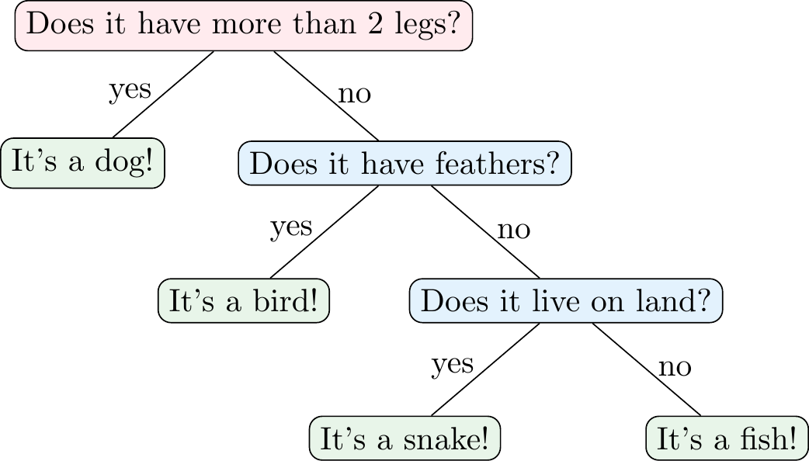
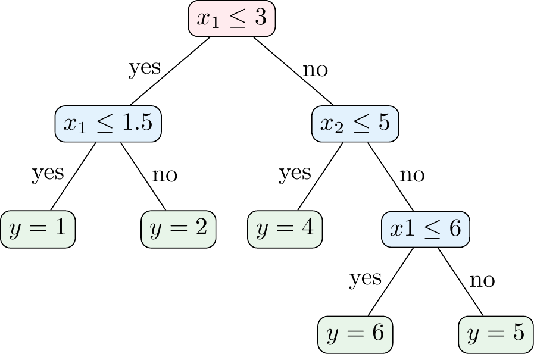
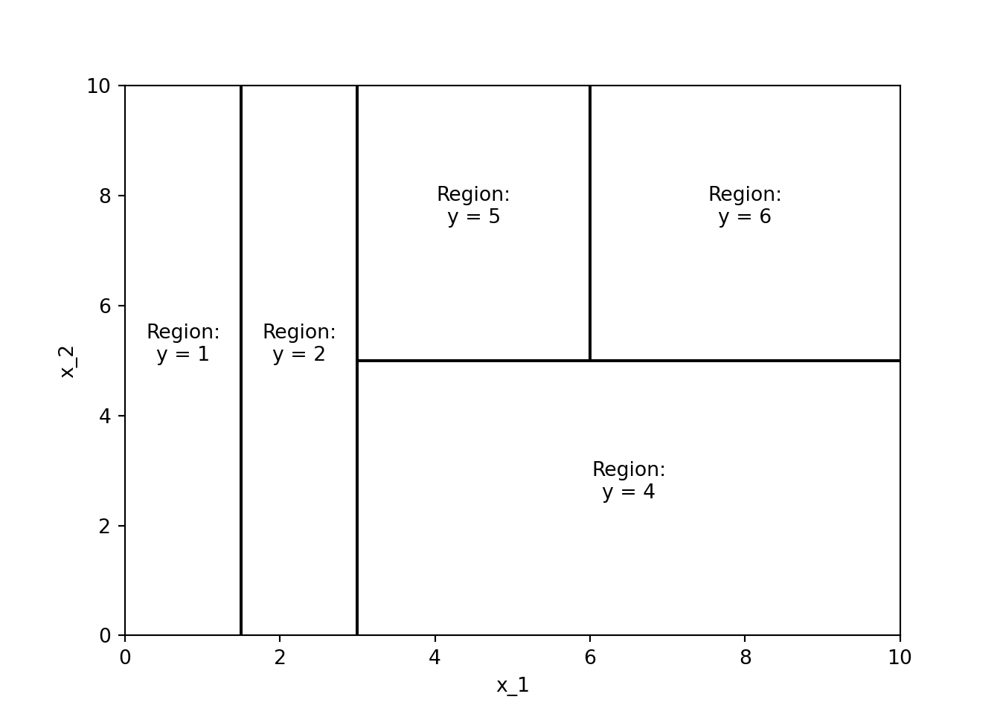
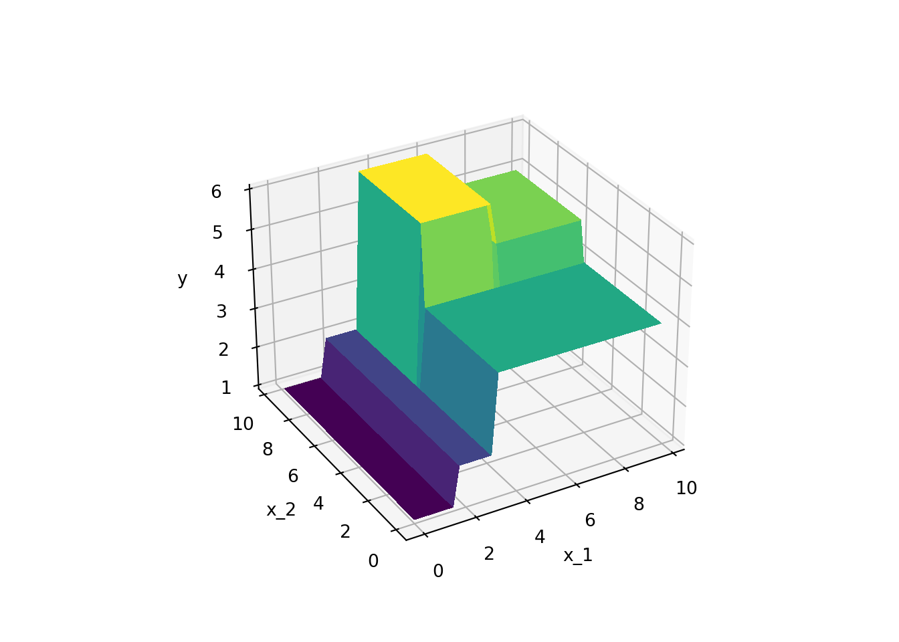
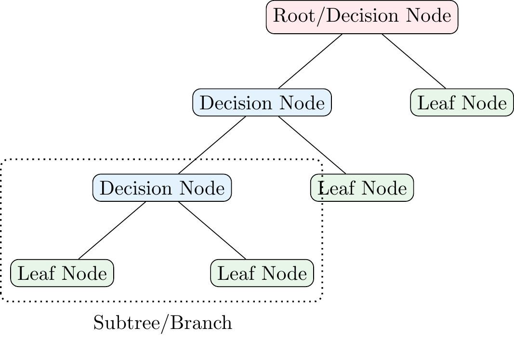
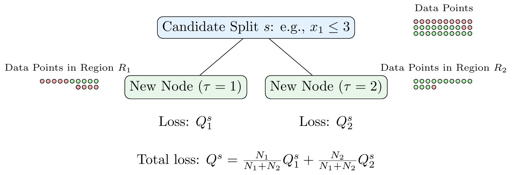
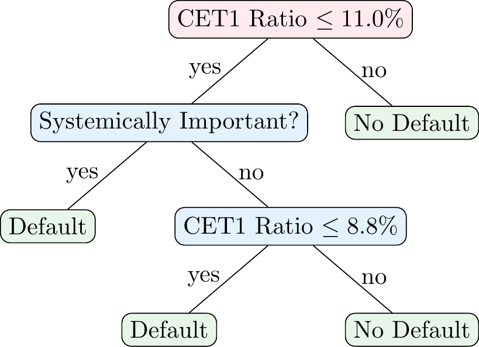
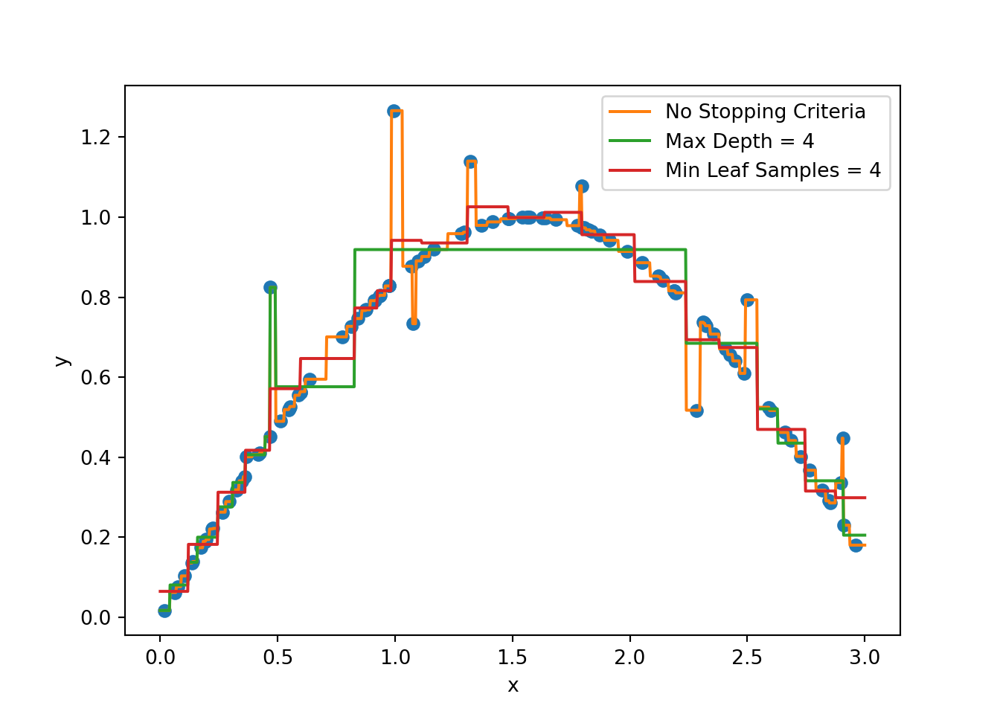
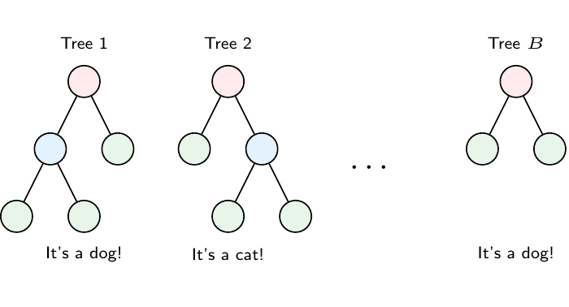

3 Decision Trees
Now that we have covered some of the basics of machine learning, we can start looking at some of the most popular machine learning algorithms. In this chapter, we will focus on Decision Trees and tree-based ensemble methods such as Random Forests and (Gradient) Boosted Trees.
3.1 What is a Decision Tree?
Decision trees, also called Classification and Regression Trees (CART) are a popular supervised learning method. As the name CART suggests, they are used for both classification and regression problems. They are simple to understand and interpret, and the process of building a decision tree is intuitive. Decision trees are also the foundation of more advanced ensemble methods like Random Forests and Boosting.
Figure 3.1 shows an example of a decision tree for a classification problem, i.e., a classification tree. In this case, the decision tree is used to classify animals into four categories: dogs, snakes, fish, and birds. The tree asks a series of questions about the features of the animal (e.g., number of legs, feathers, and habitat) and uses the answers to classify the animal. This means that the tree partitions the feature space into different regions that are associated with a particular class label.

Figure 3.2 shows an example of a decision tree for a regression problem, i.e., a regression tree. In this case, the decision tree is used to predict some continuous variable \(y\) (e.g., a house price) based on features \(x_1\) and \(x_2\) (e.g., number of rooms and size of the property). As Figure 3.7 shows, the regression tree partitions the \((x_1,x_2)\)-space into different regions that are associated with a predicted value \(y\). Mathematically, the prediction of a regression tree can be expressed as
\[\hat{y} = \sum_{m=1}^{M} c_m \mathbb{1}(x \in R_m)\]
where \(R_m\) are the regions of the feature space, \(c_m\) are the predicted (i.e., average) values in the regions, \(\mathbb{1}(x \in R_m)\) is an indicator function that is 1 if \(x\) is in region \(R_m\) and 0 otherwise, and \(M\) is the number of regions.


Mini-Exercise
Given the decision tree in Figure 3.2, what would be the predicted value of \(y\) for the following data points?
- \((x_1, x_2) = (1, 1)\)
- \((x_1, x_2) = (2, 2)\)
- \((x_1, x_2) = (2, 8)\)
- \((x_1, x_2) = (10, 4)\)
- \((x_1, x_2) = (7, 8)\)
3.2 Terminology

Figure 3.4 shows some of the terminology that you might encounter in decision trees. The root node is the first node in the tree. The root node is split into decision nodes (or leaf nodes) based on the values of the features. The decision nodes are further split into decision nodes or leaf nodes. The leaf nodes represent the final prediction of the model. A subtree or branch is a part of the tree that starts at a decision node and ends at a leaf node. The depth of a tree is the length of the longest path from the root node to a leaf node.
Furthermore, one can also differentiate between child and parent nodes. A child node is a node that results from a split (e.g., the first (reading from the top) decision node and leaf node in Figure 3.4 are child nodes of the root node). The parent node is the node that is split to create the child nodes (e.g., the root node in Figure 3.4 is the parent node of the first decision node and leaf node).
3.3 How To Grow a Tree
A key question is how to determine the order of variables and thresholds that are used in all the splits of a decision tree. There are different algorithms to grow a decision tree, but the most common one is the CART algorithm. The CART algorithm is a greedy algorithm that grows the tree in a top-down manner. The reason for this algorithm choice is that it is computationally infeasible to consider all possible (fully grown) trees to find the best-performing one. So, the CART algorithm grows the tree in a step-by-step manner choosing the splits in a greedy manner (i.e., choosing the one that performs best at that step). This means that the algorithm does not consider the future consequences of the current split and may not find the optimal tree.
The basic idea is to find a split that minimizes some loss function \(Q^s\) and to repeat this recursively for all resulting child nodes. Suppose we start from zero, meaning that we first need to determine the root node. We compute the loss function \(Q^s\) for all possible splits \(s\) that we can make. This means we need to consider all variables in our dataset (and all split thresholds) and choose the one that minimizes the loss \(Q^s\). We then repeat this process for each of the child nodes, and so on, until we reach a stopping criterion. Figure 3.5 shows an example of a candidate split.

Let \(\tau\) denote the index of a leaf node with each leaf node \(\tau\) corresponding to a region \(R_{\tau}\) with \(N_{\tau}\) data points. In the case of a classification problem, the loss function is typically either the Gini impurity
\[Q^s_{\tau} = \sum_{k=1}^{K} p_{\tau k} (1 - p_{\tau k}) = 1- \sum_{k=1}^K p_{\tau k}^2\]
or the cross-entropy
\[Q^s_{\tau} = -\sum_{k=1}^{K} p_{\tau k} \log(p_{\tau k})\]
where \(p_{\tau k}\) is the proportion of observations in region \(R_{\tau}\) that belong to class \(k\) and \(K\) is the number of classes. Note that both measures become zero when all observations in the region belong to the same class (i.e., \(p_{\tau k} = 1\) or \(p_{\tau k} = 0\)). This is the ideal case for a classification problem: we say that the node is pure.
In the case of a regression problem, the loss function is typically the mean squared error (MSE)
\[Q^s_{\tau} = \frac{1}{N_{\tau}} \sum_{i \in R_{\tau}} (y_i - \hat{y}_{\tau})^2\]
where \(\hat{y}_{\tau}\) is the predicted value of the target variable \(y\) in region \(R_{\tau}\)
\[\hat{y}_{\tau} = \frac{1}{N_{\tau}} \sum_{i \in R_{\tau}} y_i,\]
i.e., the average of the target variable in region \(R_{\tau}\).
The total loss of a split \(Q^s\) is then the weighted sum of the loss functions of the child nodes
\[Q^s = \frac{N_1}{N_1+N_2}Q^s_{1} + \frac{N_2}{N_1+N_2}Q^s_{2}\]
where \(N_1\) and \(N_2\) are the number of data points in the child nodes.
Once we have done this for the root node, we repeat the process for each child node. Then, we repeat it for the child nodes of the child nodes, and so on, until we reach a stopping criterion. The stopping criterion can be, for example, a maximum depth of the tree, a minimum number of data points in a leaf node, or a minimum reduction in the loss function.
3.3.1 Example: Classification Problem
Suppose you have the data in Table 3.1. The goal is to predict whether a bank will default based on two features: whether the bank is systemically important and its Common Equity Tier 1 (CET1) ratio (i.e., the ratio of CET1 capital to risk-weighted assets). The CET1 ratio is a measure of a bank’s financial strength.
| Default | Systemically Important Bank | CET1 Ratio (in %) |
|---|---|---|
| Yes | No | 8.6 |
| No | No | 9 |
| Yes | Yes | 10.6 |
| Yes | Yes | 10.8 |
| No | No | 11.2 |
| No | No | 11.5 |
| No | Yes | 12.4 |
Given that you only have two features, CET1 Ratio and whether it is a systemically important bank, you only have two possible variables for the root node. However, since CET1 is a continuous variable, there are potentially many thresholds that you could use to split the data. To find this threshold, we need to calculate the Gini impurity of each possible split and choose the one that minimizes the impurity.
| CET1 Ratio Threshold | Q₁ | Q₂ | Q |
|---|---|---|---|
| 8.8 | 0 | 0.44 | 0.38 |
| 9.8 | 0.5 | 0.2 | 0.29 |
| 10.7 | 0.44 | 0.38 | 0.4 |
| 11 | 0.38 | 0 | 0.21 |
| 11.35 | 0.48 | 0 | 0.34 |
| 11.95 | 0.5 | 0 | 0.43 |
According to Table 3.2, the best split is at a CET1 ratio of 7.0%. The Gini impurity for \(\text{CET1}\leq 11\%\) is 0.38, the Gini impurity of \(\text{CET1}>11\%\) is 0, and the total impurity is 0.21. However, we could also split based on whether a bank would be systemically important. In this case, the Gini impurity of the split is 0.40. This means that the best split is based on the CET1 ratio. We split the data into two regions: one with a CET1 ratio of 11.0% or less and one with a CET1 ratio of more than 11.0%.
Note that the child node for a CET1 ratio of more than \(11.0\%\) is already pure, i.e., all banks in this region are not defaulting. However, the child node for a CET1 ratio of \(11.0\%\) or less is not pure meaning that we can do additional splits as shown in Figure 3.6. In particular, both, the split at a CET1 ratio of 9.8% and the split based on whether a bank is systemically important yield a Gini impurity of 0.25. We choose the split based on whether a bank is systemically important as the next split, which means we can do the final split based on the CET1 ratio.

3.3.2 Stopping Criteria and Pruning a Tree
A potential problem with decision trees is that they can overfit the training data. In principle, we can get the error down to zero if we just make enough splits. This means that the tree can become too complex and capture noise in the data rather than the underlying relationship. To prevent this, we usually set some early stopping criteria like
- A maximum depth of the tree,
- A minimum number of data points in a leaf node,
- A minimum number of data points required in a decision node for a split,
- A minimum reduction in the loss function, or
- A maximum number of leaf nodes,
which will prevent the tree from growing too large and all the nodes from becoming pure. We can also use a combination of these criteria. In the Python applications, we will see how to set some of these stopping criteria.
Figure 3.7 shows an example of how stopping criteria affect the fit of a decision tree. Note that without any stopping criteria, the tree fits the data perfectly but is likely to overfit. By setting a maximum depth or a minimum number of data points in a leaf node, we can prevent the tree from overfitting the data.

Another way to prevent overfitting is to prune the tree, i.e., to remove nodes from the tree according to certain rules. This is done after (not during) growing the tree. One common approach is to use cost-complexity pruning. The idea is related to regularization that we have seen before, i.e., we add a term to the loss functions above that penalizes tree complexity. The pruning process is controlled by a hyperparameter \(\lambda\) that determines the trade-off between the complexity of the tree and its fit to the training data.
Mini-Exercise
How would the decision tree in Figure 3.6 look like if
- we required a minimum of 2 data points in a leaf node?
- we required a maximum depth of 2?
- we required a maximum depth of 2 and a minimum of 3 data points in a leaf node?
- we required a minimum of 3 data points for a split?
- we required a minimum of 5 data points for a split?
3.4 Advantages and Disadvantages
As noted by Murphy (2022), decision trees are popular because of some of the advantages they offer
- Easy to interpret
- Can handle mixed discrete and continuous inputs
- Insensitive to monotone transformations of the inputs
- Automatic variable selection
- Relatively robust to outliers
- Fast to fit and scale well to large data sets
- Can handle missing input features1
Their disadvantages include
- Not very accurate at prediction compared to other kinds of models (note, for example, the piece-wise constant nature of the predictions in regression problems)
- They are unstable: small changes to the input data can have large effects on the structure of the tree (small changes at the top can affect the rest of the tree)
3.5 Random Forests
Decision trees can be unstable meaning that small changes in the training data can lead to large changes in the tree structure. One way to address this issue is to use Random Forests. Random Forests is an ensemble method: The idea is to build a large number of trees (also called weak learners in this context), each of which is trained on a random subset of the data. The predictions of the trees are then averaged in regression tasks or determined through majority voting in the case of classification tasks to make the final prediction. Training multiple trees on random subsets of the data is also called bagging (short for bootstrap aggregating). Random Forests adds an additional layer of randomness by selecting a random subset of features for each tree. This means that each tree is trained on a different subset of the data and a different subset of features.

The basic steps of the Random Forest algorithm are as follows:
- Bootstrapping: Randomly draw \(N\) samples with replacement from the training data.
- Grow a tree: For each node of the tree, randomly select \(m\) features from the \(p\) features in the bootstrap dataset and find the best split based on these \(m\) features.
- Repeat: Repeat steps 1 and 2 \(B\) times to grow \(B\) trees.
- Prediction: To get the prediction for a new data point, average the predictions of all trees in the case of regression or use a majority vote in the case of classification.
Note that because we draw samples with replacement, some samples will not be included in the bootstrap sample. These samples are called out-of-bag (OOB) samples. The OOB samples can be used to estimate the performance of the model without the need for cross-validation since it is “performed along the way” (Hastie, Tibshirani, and Friedman (2009)). The OOB error is almost identical to the error obtained through N-fold cross-validation.
3.6 Boosting
Another popular ensemble method is Boosting. The idea behind boosting is to train a sequence of weak learners (e.g., decision trees), each of which tries to correct the mistakes of the previous one. The predictions of the weak learners are then combined to make the final prediction. Note how this differs from Random Forests where the trees are trained independently of each other in parallel, while here we sequentially train the trees to fix the mistakes of the previous ones. The basic steps can be roughly summarized as follows:
- Initialize the model: Construct a base tree with just a root node. In the case of a regression problem, the prediction could be the mean of the target variable. In the case of a classification problem, the prediction could be the log odds of the target variable.
- Train a weak learner: Train a weak learner on the data. The weak learner tries to correct the mistakes of the previous model.
- Update the model: Update the model by adding the weak learner to the model. The added weak learner is weighted by a learning rate \(\eta\).
- Repeat: Repeat steps 2 and 3 until we have grown \(B\) trees.
XGBoost (eXtreme Gradient Boosting) is a popular implementation of the (gradient) boosting algorithm. It is known for its performance and is widely used in machine learning competitions. The algorithm is based on the idea of gradient boosting, which is a generalization of boosting. We will see how to implement XGBoost in Python but will not go into the details of the algorithm here. Other popular implementations of the boosting algorithm are AdaBoost and LightGBM.
3.7 Interpreting Ensemble Methods
A downside of using ensemble methods is that you lose the interpretability of a single decision tree. However, there are ways to interpret ensemble methods. One way is to look at the feature importance. Feature importance tells you how much each feature contributes to the reduction in the loss function. The idea is that features that are used in splits that lead to a large reduction in the loss function are more important. Murphy (2022) shows that the feature importance of feature \(k\) is
\[R_k(b)=\sum_{j=1}^{J-1} G_j \mathbb{I}(v_j=k)\]
where the sum is over all non-leaf (internal) nodes, \(G_j\) is the loss reduction (gain) at node \(j\), and \(v_j = k\) if node \(j\) uses feature \(k\). Simply put, we sum up all gains of the splits that use feature \(k\). Then, we average over all trees in our ensemble to get the feature importance of feature \(k\)
\[R_k = \frac{1}{B}\sum_{b=1}^{B} R_k(b).\]
Note that the resulting \(R_k\) are sometimes normalized such that the maximum value is 100. This means that the most important feature has a feature importance of 100 and all other features are scaled accordingly. Note that feature importance can in principle also be computed for a single decision tree.
Warning
Note that feature importance tends to favor continuous variables and variables with many categories (for an example see here). As an alternative, one can use permutation importance which is a model-agnostic way to compute the importance of different features. The idea is to shuffle the values of a feature in the test data set and see how much the model performance decreases. The more the performance decreases, the more important the feature is.
3.8 Python Implementation
Note to handle missing input data one can use “backup” variables that are correlated with the variable of interest and can be used to make a split whenever the data is missing. Such splits are called surrogate splits. In the case of categorical variables, one can also use a separate category for missing values.↩︎